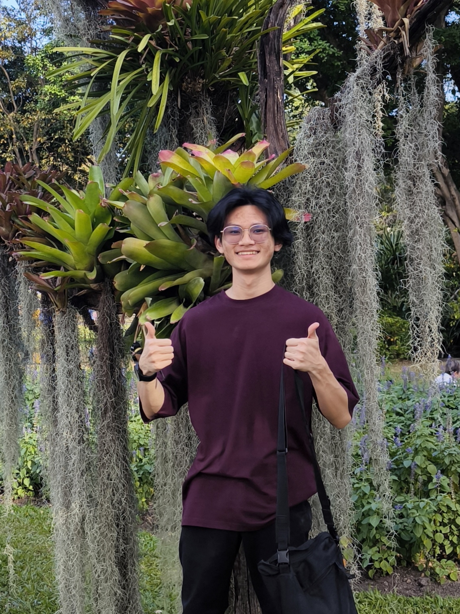

UI/UX & Graphics Designer
Passionate designer focused on bridging human-centered interfaces, 3D interactive visuals, and digital product storytelling.
Designed enterprise web consoles, UI design systems, and vector illustrations for cloud infrastructure interfaces.
Developed experimental interactive systems, 3D scene compositions, and sustainable materials packaging prototypes.